The Leaders Behind the Movement
We helped build the pro bono movement. Now we're building the boards nonprofits need for the AI era.
Founding Team
Alethea Hannemann
Built cross-sector collaborations at Taproot, Okta, Google, and Splunk. Former COO of a $25M nonprofit. Co-author of Powered by Pro Bono. Bridges tech, philanthropy, and mission leadership.
Aaron Hurst
Serial social entrepreneur; founded Taproot Foundation ($15B pro bono market) and Imperative (venture-backed B Corp). Advisor to LinkedIn and longtime board member. Author of Powered by Pro Bono and The Purpose Economy.
Nonprofit Tech Governance Congress
The Nonprofit Tech Governance Congress brings together experts from tech, philanthropy, and civil society to define shared standards for responsible tech adoption at the board level. This work addresses urgent risks like bias, surveillance, and exclusion, and creates the leadership infrastructure every product, grant, and innovation needs to succeed. The Congress aligns funders, companies, and nonprofits so AI and digital transformation deliver real impact.
Our Members
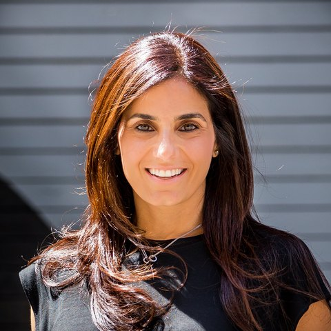
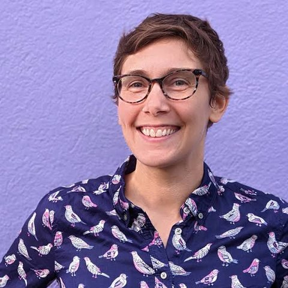
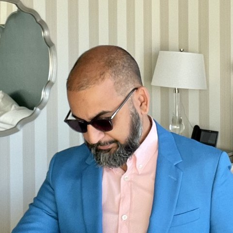
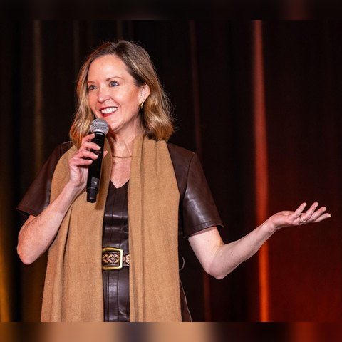
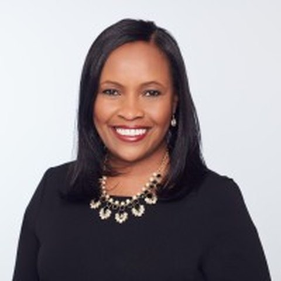
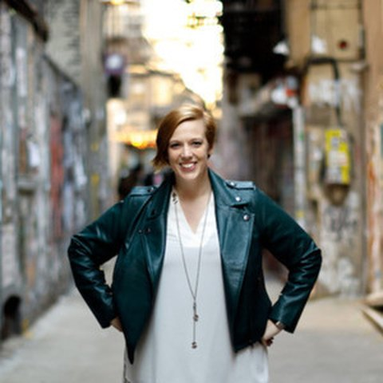
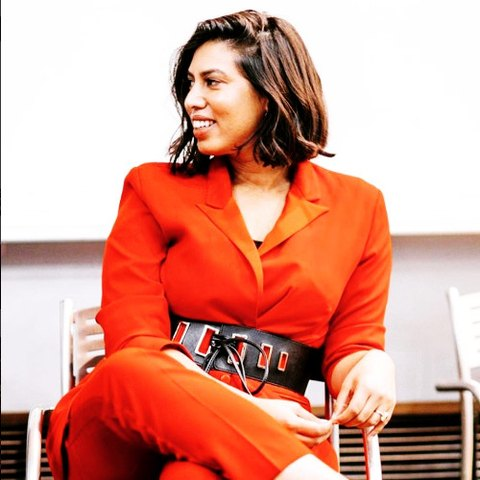
Featured in
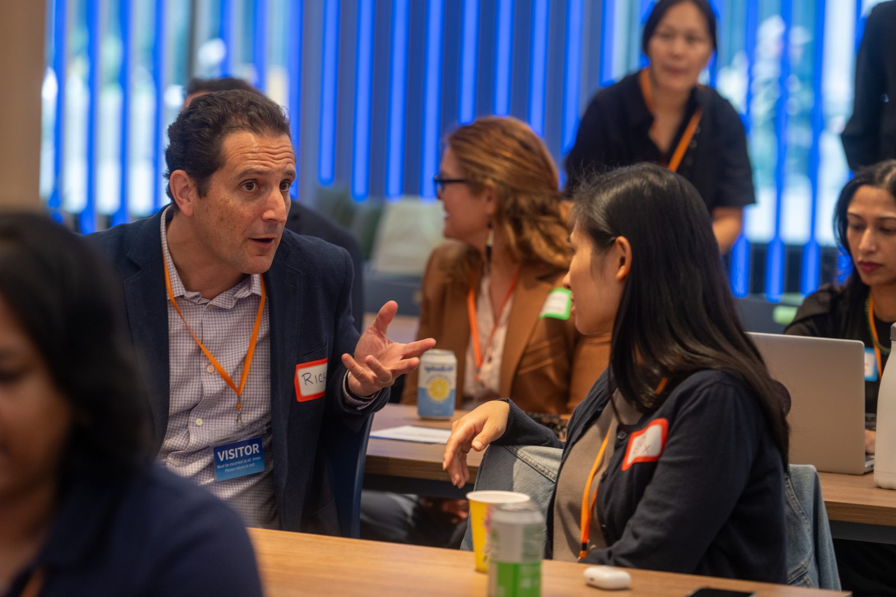
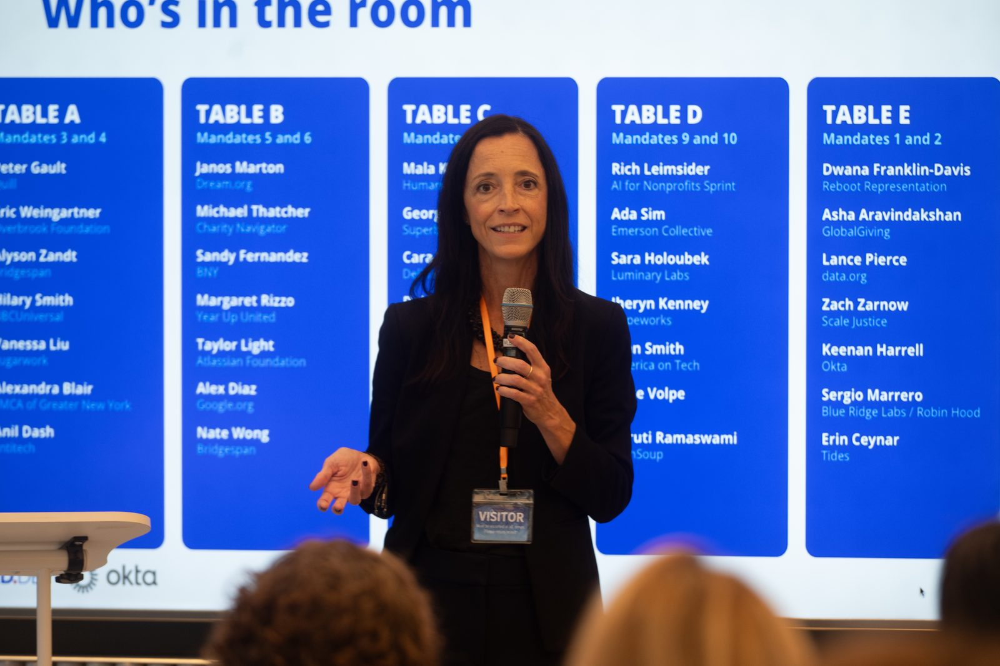
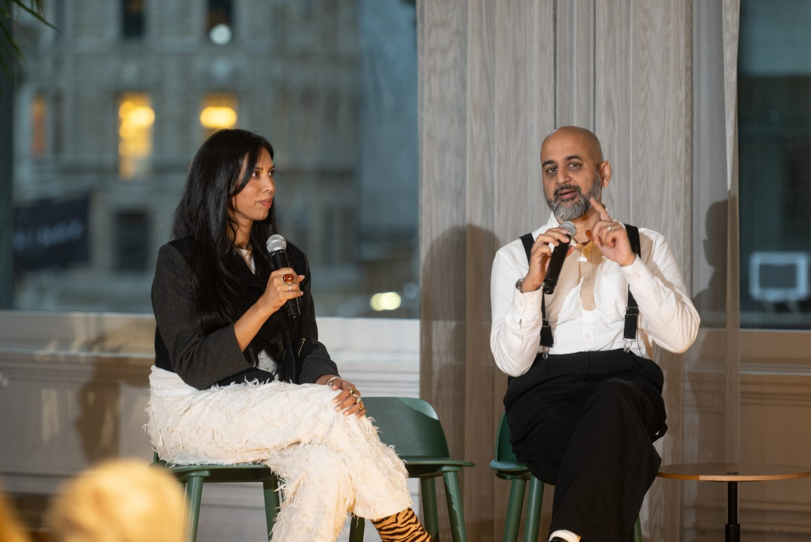
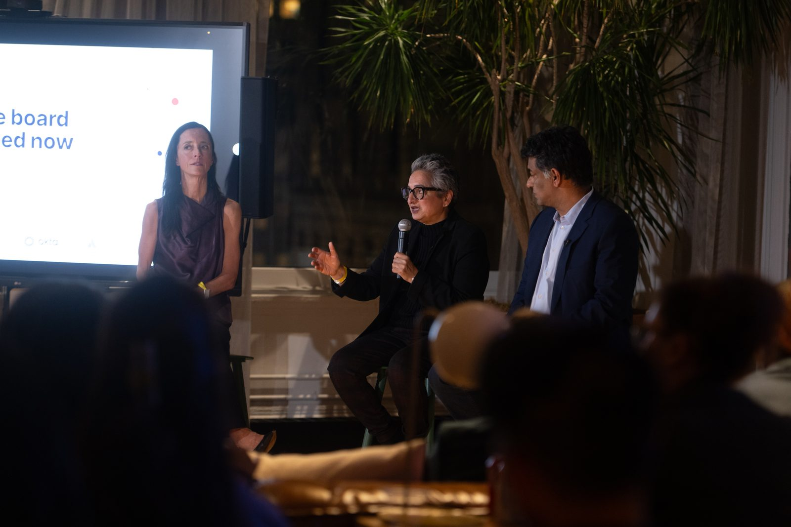
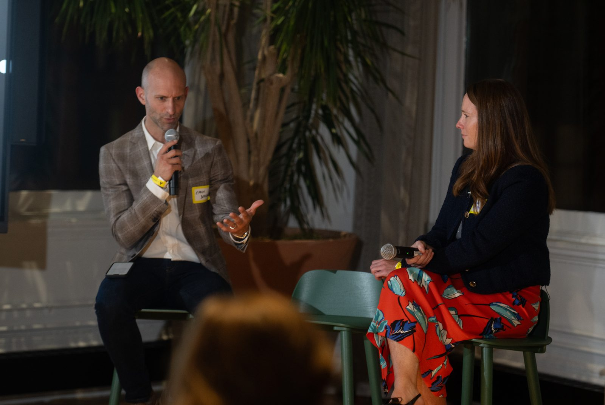
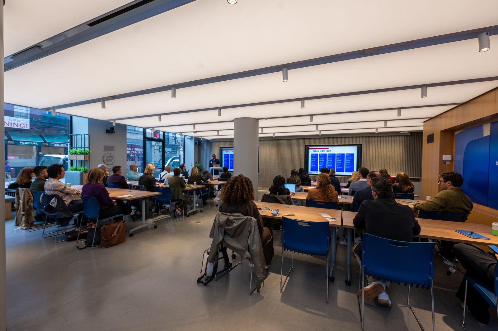
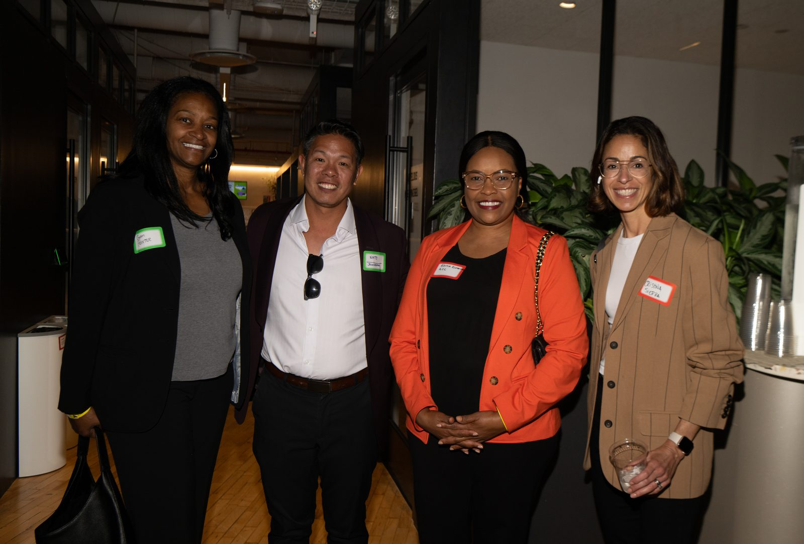
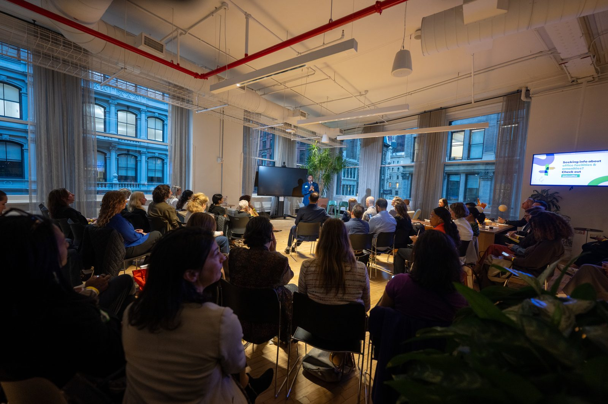
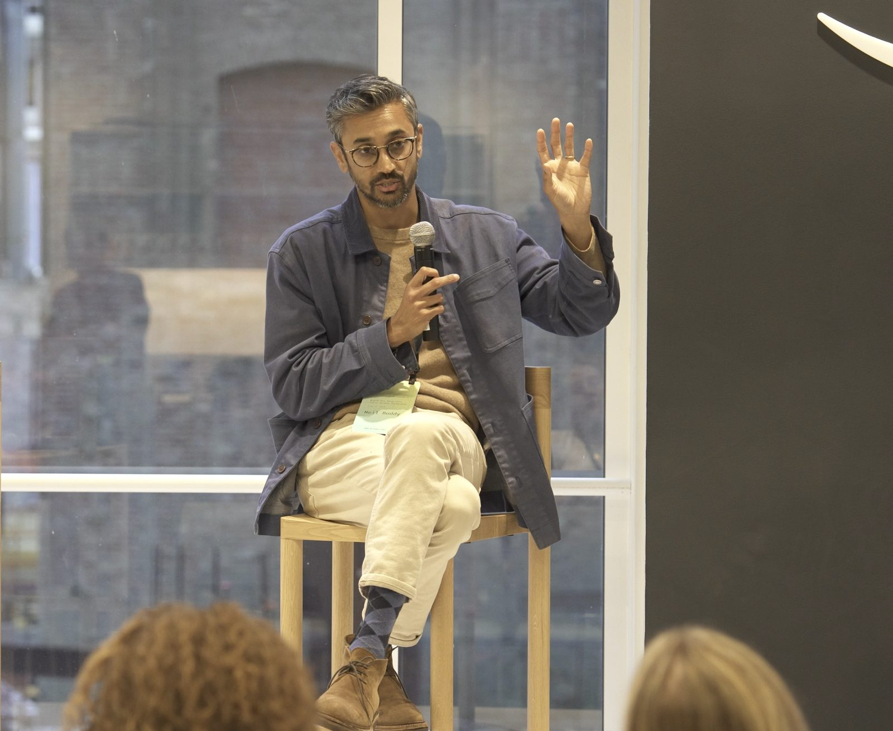
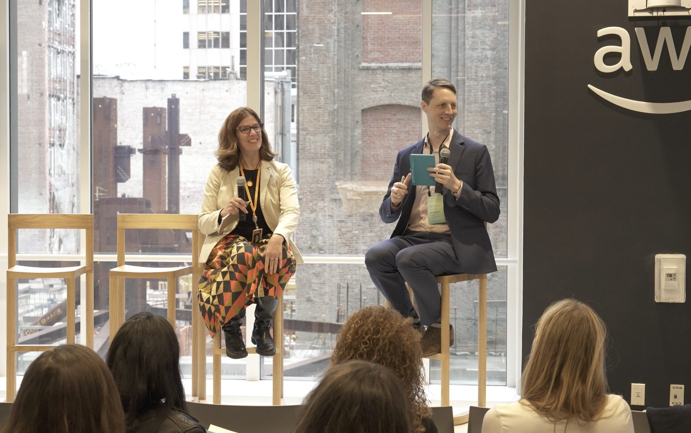
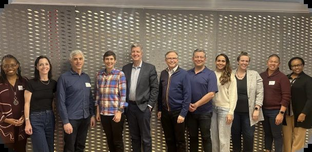
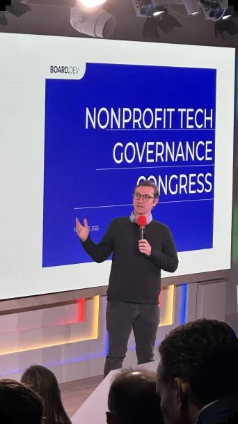
Tech-ready boards.
Mission-ready nonprofits.